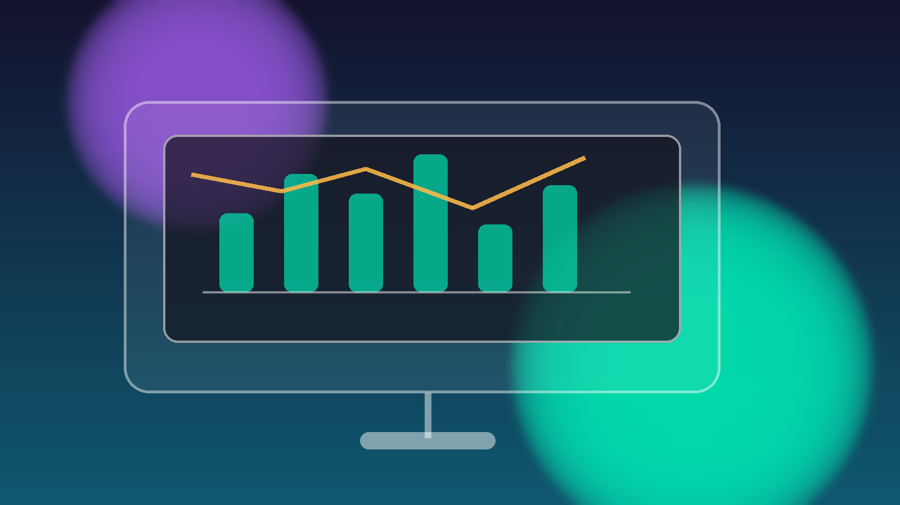

Self-emitting pixels — no backlight required. Typically 80–120W for a 55″ screen.

Appliance Spotlight
Television Energy Efficiency
Compare panel technologies and find out how much your TV is actually costing you each year.
Panel Technology & Efficiency
Different display technologies have significantly different energy profiles.
Quantum dot LCD. Brighter than standard LED with moderate power draw.
Better local dimming than standard LED, but higher power at large sizes.
Older technology with higher power consumption per inch.
2024 TV Energy Comparison — Australian Market
Based on 5 hrs/day usage at 30¢/kWh. Star ratings shown as a simple placeholder.
| Brand Model | Type | Power (W) | Standby (W) | Stars | Annual Cost |
|---|---|---|---|---|---|
| LG OLED C4 55″ | OLED | 102 | 0.3 | ★★★★★★ | $18.60 |
| Samsung QN85D 55″ | QLED | 128 | 0.5 | ★★★★★★ | $23.35 |
| Sony X90L 65″ | LED/LCD | 158 | 0.5 | ★★★★★★ | $28.83 |
| TCL C845 65″ | Mini-LED | 175 | 0.5 | ★★★★★★ | $31.94 |
| Hisense U8K 75″ | Mini-LED | 230 | 0.5 | ★★★★★★ | $41.98 |
| Panasonic MZ1500 55″ | OLED | 98 | 0.3 | ★★★★★★ | $17.89 |
| Samsung The Frame 55″ | QLED | 86 | 0.5 | ★★★★★★ | $15.69 |
Annual cost = power (kW) × 5 hrs/day × 365 days × $0.30. Standby cost excluded.
Buying a TV? Energy Considerations
What to look for when shopping for an energy-efficient television.
Check the Energy Rating Label
More stars generally mean lower running cost for Australian televisions.
Size Matters for Power Draw
A 75″ TV can use 2–3× more power than a 55″ equivalent. Only size up when you need it.
Watch Out for Standby Power
TVs left on standby 24/7 can still add to your annual bill. Switch off at the power point when practical.